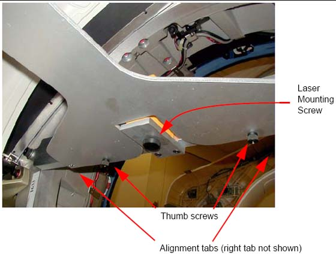
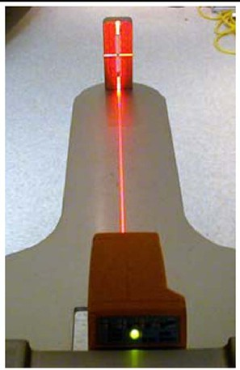
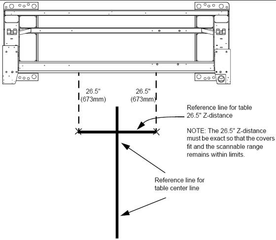

Operating Documentation
Direction 5193574-800, Rev# 22
Module Version 1.0, Version Date 4/22/10
Operating Documentation |
| ||||
| Use caution while removing the gantry scan window. | ||||
Rotate the gantry by hand until the collimator face plate is at the 5 o’clock position.
With the top and back gantry covers removed, locate the two M10 bolt holes as shown in Illustration 1. These bolt holes are used to attach the laser tool to the gantry.
| ||||
| Potential for injury. | ||||
| DO NOT look into the laser. | ||||
| Use appropriate safety procedures when working with lasers. |
Attach the laser centering plate onto the laser mounting bar as shown in Illustration 2. The plate is attached from under the alignment bar using two fixed locators and two thumb screws.
Illustration 2: Attach Laser Center Plate

When done, insert the laser and turn on the laser using the controls on the back. If the laser is loose when mounted, use a 2 in. piece of Velcro loop (fuzzy) section and attach it to the alignment plate over the attachment screw. Remount the laser and it should fit snugly without moving.
When pressed, the ON button steps through four different beam profiles and “Self-Leveling Off”. Press the ON button until the “|” beam shows. It is used for this operation.
Align the laser by carefully rotating the laser base assembly so that the “I” beam shines through the center of the alignment sight mounted on the end of the alignment plate.
Use the locking screw on the bottom of the alignment bar to secure the laser to the bar, as shown in Illustration 4. When done, the laser should fit snugly without moving on the mounting bracket.
Illustration 4: Laser Centering

| ||||
| When tightening, the laser may move. Use caution to prevent any movement, as this can result in drilling the table anchor holes in the wrong location. | ||||
After the laser is centered, notice that the laser beam also appears on the back wall. Place a piece of masking tape on the wall and carefully mark a line on the tape where the laser appears. This line is later used in the table alignment. This line is also useful in determining if the laser unit moves during the alignment process.
Remove the alignment centering plate and store it in the alignment case.
Illustration 5: Table Center Line

Recheck the table-to-gantry reference line for 26.5 in. (± 0.25 in.) Z-distance. Refer to Illustration 5.
Turn off the laser but do not remove.
Locate the aluminum accessory tray mounting plate with the three holes on the rear of the cradle. Fit the rear alignment target into the two mounting holes as shown in Illustration 6. Use the adjustment screw to adjust the fit as needed. When you are finished, the fit should be snug, without play.
Check that the table base is centered over the table center line, and the base is on the 26.5 in.line (± 0.25 in.) made on the floor.
Lower the table to the floor using the dollies, making sure to maintain the 26.5 in. (± 0.25 in.) distance.